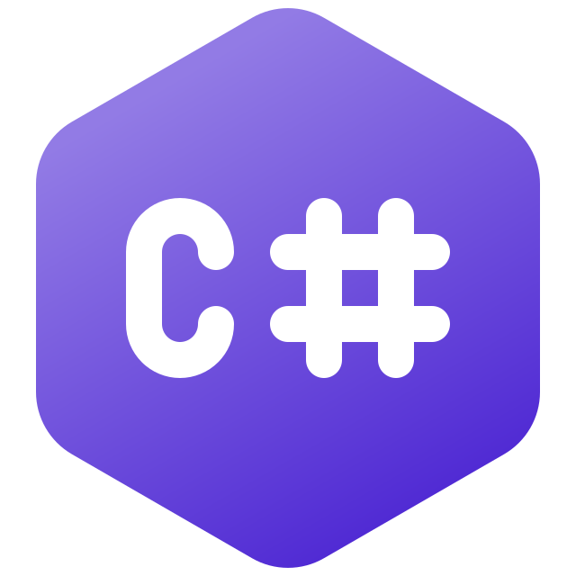

C# was created by Anders Hejlsberg, Scott Wiltamuth, and Peter Golde in the year 2000. The language was developed and released as part of the .NET framework and gained popularity thanks to how easy it was to use as well as its versatility. C# has evolved through its many versions to meet the changing needs of developers, adding unique features that has affected how C# applications are developed. Overall, the language has continuously grown as it has received new advanced features, increased its productivity and function better with other technologies.
C# is meant to be a simple, modern, general-purpose, and object-oriented programming language. It is intended for use in developing software components that work well in distributed environments, but it is also meant to be suitable for application development for both hosted and embedded systems.
The language is widely used mainly in three areas: Windows applications, games, and website development. Since C# was developed within Microsoft, it is used for the development of Windows desktop applications.